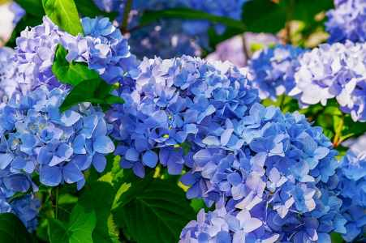
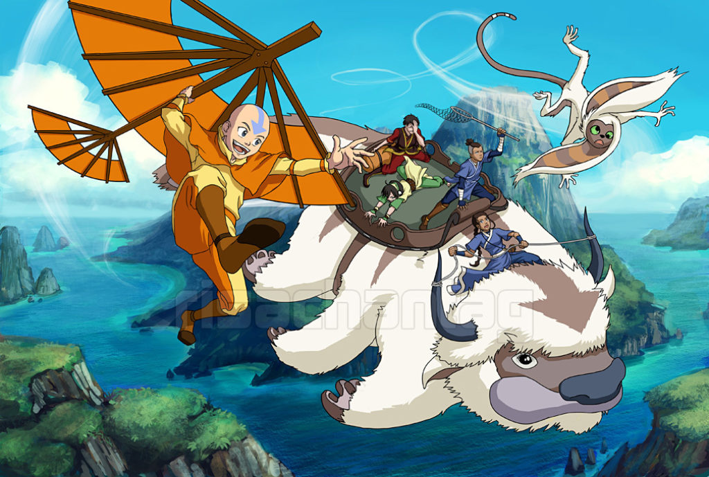

My favorite color is BLUE!
I really like blue so of course my favorite flower is blue!!!
The name is Blue Hydrangea.

My favorite show is Avatar: The Last Airbender
I'm currently rewatching it lol
